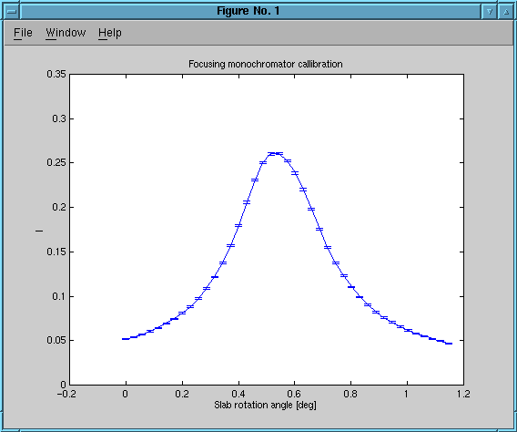

perl scan/gscan.pl 41 ./focus-mono-i386 sim/focus_mono_1.sim 0.6434767247775 1.286953449555 0,0.02 1e6
focus_mono_1.sim
Plot of difference in slab rotation angle versus measured intensity on a 10mmx10mm square sample: 